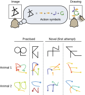

The Goal
Like the heart, lung or any other organ, the brain is an unassuming collection of biological matter. Yet, from this organ comes all our abilities to perceive, act, reason, remember, imagine, and feel—the things that make each of us who we are. The brain is thus a biological machine harboring mechanisms that generate the mind. What are these mechanisms? Answering this question is critical for both understanding our own human nature, and for understanding the root causes of brain disorders.
Our lab’s mission is to tackle this question—how the mind arises from the brain—by studying the neural mechanisms of cognition. We are currently focused on a fundamental aspect of cognition: the ability to learn and generalize by representing the world's abstract, compositional structure and reorganizing that structure to understand unfamiliar situations and solve novel problems.
Overview
We routinely solve new problems we’ve never seen before, whether using an unfamiliar tool, generating a sentence to convey a new idea, or parsing a new mathematical expression. How is this possible? From finite experience, we somehow have the potential to understand an unbounded number of novel situations. Our lab seeks the neural and cognitive mechanisms underlying this ability.
Our overarching thesis is that we can solve new problems because the brain can rapidly generate structured novelty through two complementary operations: abstraction and recombination.
Abstraction: Discovering and representing reusable concepts, categories, rules, and relations that capture the hidden compositional structure of experience.
Recombination: Rapidly assembling abstract components into novel structures to solve unfamiliar problems.
Our long-term goals are to study abstraction and recombination to identify the fundamental computations underlying creative intelligence—across abilities like planning, reasoning, and imagination—and to understand how disruption of these computations gives rise to disorders of cognition.

Specific Directions
We study problems at the intersection of neuroscience and cognitive science, including:
How do we represent and recombine concepts? What is the neural code(s) for concepts? How does this code explain the compositional relationship between atomic concepts (e.g., a body part, like "arm") and constructed concepts (e.g., an imagined animal with five arms)? How do rules/transformations in that code explain the recombination that allows us to rapidly imagine new concepts? Related work: [1] [2] [4]
Do we have "languages of thought" and, if so, how do they work? Thinking, even without words, seems to use "languages of thought", or symbolic systems for generating meaningful sentence-like expressions. An example of such a "sentence" would be a representation of an action as the program "place a nut on a large rock then smash it with a small rock". At the algorithmic level, are thoughts symbolic programs? At the neural level, how would such programs work? Related work: [2] [3] [4] [5]
How do functionally specialized brain areas work together to enable cognition? Different areas of the primate brain are known to exhibit different functions, and the connections between these areas are complex and structured. What are the functions of different areas, and how are these functions integrated to enable perception, thought, and action? Areas of immediate interest are in frontal and parietal cortex, basal ganglia, and hippocampus. Related work: [1] [2]
What are the cognitive foundations of movement? To do intelligent things with our body--such as imitating a dance or manipulating a new tool--requires linking cognition and motor control. We study how this works, especially with respect to motor abstractions [1] and grammars [2]. Related work: [1] [2] [3] [5] [6]
What makes us human? What is unique to human cognition and what is shared with other animals? Do capabilities that are unique to humans require specialized neural machinery? Related work: [4] [7]
Our lab uses diverse approaches to address these problems, including:
Behavioral tasks. We design cognitive-motor tasks that isolate abstraction and recombination in people and animals solving novel problems. One focus is on how we solve physical problems (e.g., drawing a copy of an object) by generating novel movements by recombining action concepts (symbols, grammars). We are developing new tasks, guided by specific scientific questions. Example work: [1] [2] [4]
Large-scale electrophysiology. We record and perturb the spiking activity of many neurons (hundreds, and increasing) across multiple brain areas in animals engaged in tasks. We use both chronic arrays (e.g., floating microelectrode arrays) and acute high-density probes (e.g., Neuropixels) for their separate advantages. Example work: [1] [2]
Theory and modeling. In our lab, and in collaboration with others, we develop computational theories for how cognition works in neural systems. We test these theories by building models and testing their predictions in data. Example work: [3] [4] [5]
Human neuroscience. In the immediate future, we are excited to collaborate with neurosurgeons to understand how the human mind arises from neural activity. This allows us to relate the mechanisms we find in animals to humans. It also allows us to study human-specific forms of abstraction and generalization, building on our human tasks and models [4].
References
- Tian LY, Garzón Gupta K, Hanuska DJ, Rouse AG, Eldridge MAG, et al. Neural representation of action symbols in primate frontal cortex. Nature (2026).
- Tian LY, Hanuska DJ, Garzón Gupta K, Liu Y, Wang XJ, Tenenbaum JB, et al. Neural representation of action grammar structure in primate frontal cortex. bioRxiv (2026).
- Liu Y, Tian LY, Tenenbaum JB, Freiwald WA, Wang XJ. A neural circuit algorithm for action grammar. bioRxiv (2026).
- Tian L, Ellis K, Kryven M, Tenenbaum JB. Learning abstract structure for drawing by efficient motor program induction. Advances in Neural Information Processing Systems 33 (2020).
- Correa CG, Tian LY, Liu Y, Kumar S, Hanuska D, Garzón Gupta K, et al. Signatures of discrete action representations emerge in a task-optimized neuro-symbolic model. Cognitive Computational Neuroscience (CCN) Extended Abstracts (2026).
- McDougle SD, Tian LY, Sun Z, Wong AL. Motor abstraction in mind and brain. Submitted.
- Collaboration with Mathias Sablé-Meyer and Stanislas Dehaene comparing the neural basis of geometry in humans and animals.